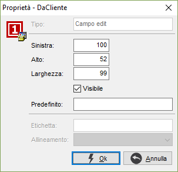
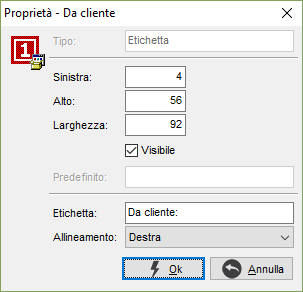

La finestra consente di modificare le proprietà sia dei campi, che delle etichette di testo.
Proprietà del campo

SINISTRA: distanza del campo, dal bordo sinistro della finestra.
ALTO: altezza del campo.
LARGHEZZA: larghezza del campo.
VISIBILE: consente di non visualizzare il campo (casella vuota).
PREDEFINITO: valore da impostare come default per il campo.
Proprietà dell'etichetta di testo

SINISTRA: distanza dell'etichetta, dal bordo sinistro della finestra.
ALTO: altezza dell'etichetta.
LARGHEZZA: larghezza dell'etichetta.
VISIBILE: consente di non visualizzare l'etichetta (casella vuota).
ETICHETTA: testo che deve comparire sull'etichetta.
ALLINEAMENTO: allineamento del testo all'interno dell'etichetta: a destra, a sinistra, centrato.